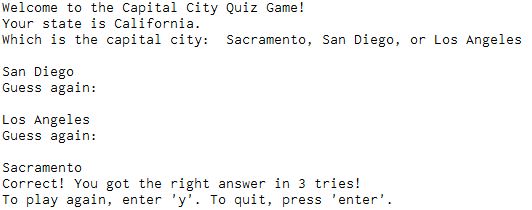
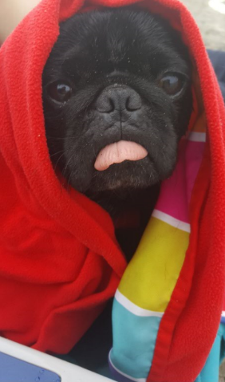
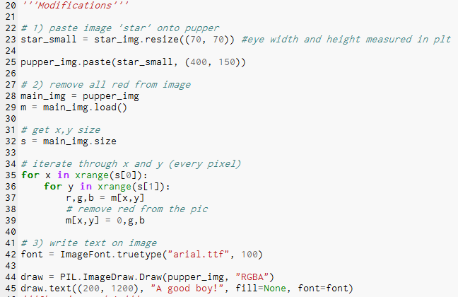
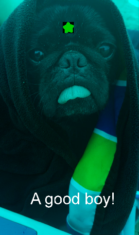
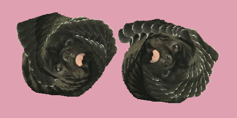
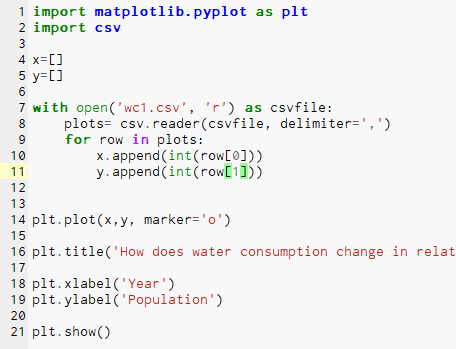
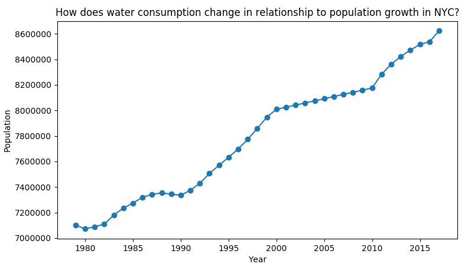
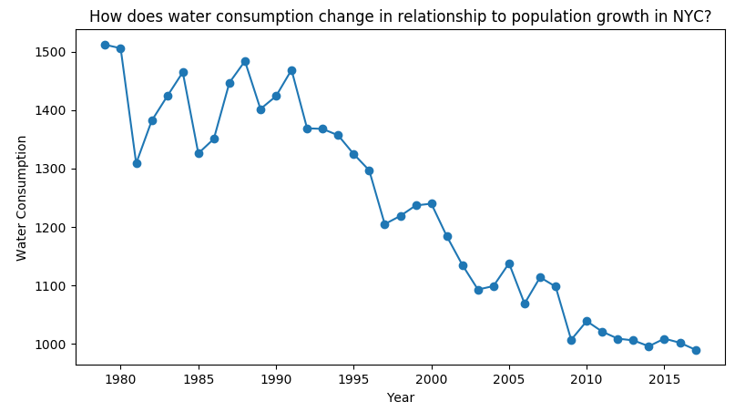

This is my portfolio page!

Click on photos to travel to the programs!
Scratch Home:

Minion Path Game:
Memory game created with Scratch in which the player must lead the minion to the banana.
To move the minion, the user presses the arrow keys. If the player moves out of bounds, the minion returns to starting position.
Game consists of multiple levels with increased difficulty in each.

Physics Calculator App:
App created with MIT App Inventor that displays the formula and provides a calculator for user to input values.
The user has the option to choose different formulas. Each formula has its own screen.
Contact information for each creator is available at the bottom of the start-up screen.

To download the app:
Click the dropdown menu called 'build'
Click 'provide QR code'
Use and android device to scan the code and download the file.
The Quest of a Lifetime!
RPG style game created with Python in which the player must survive and escape from the magic woods.
User is prompted to make a series of this-or-that decisions that lead them down a path to either success in escaping the woods or failure to survive.


Capital City Quiz!
Game created with Python Language in which the player is prompted to guess the capital city of a randomly generated state in the US.
The program counts the amount of times a user enters a guess and displays it when the player guesses the city correctly.
To play the game:
Download the file and run it in a Python editor.
Image Manipulation!
Image modified with the use of the PIL and Pyplot libraries in Python. Changes in the image include the addition of a star on the puppy's forehead, removing all the red from the image, and adding text.
The changes in the image were done with the use of for loops to traverse each pixel and creating PIL and Pyplot objects to access the methods from those libraries.
Shown below is the image before and after modifications. After downloading the files(click the puppy below), make sure that the image files and the Python file are in the same directory when running the program.
  Stamper Modifications
Changes in the Stamper project provided by the PLTW Python lessons, include changing the limit for degrees turned from 30 to 90 degrees, changing the picture to one of my dog, changing stamp speed maximum from 500 to 200.
Graphing Imported Data
To start the data plots, the data from a CSV file was imported and appended into two separate arrays using a for loop. The x and y axes are labeled and the pyploy is displayed. In order to read in both data sets from the same CSV file, the index of the arraw row is changed from 1 to 2.
Shown below is the code that displays the individual plots followed by the data plots.
 